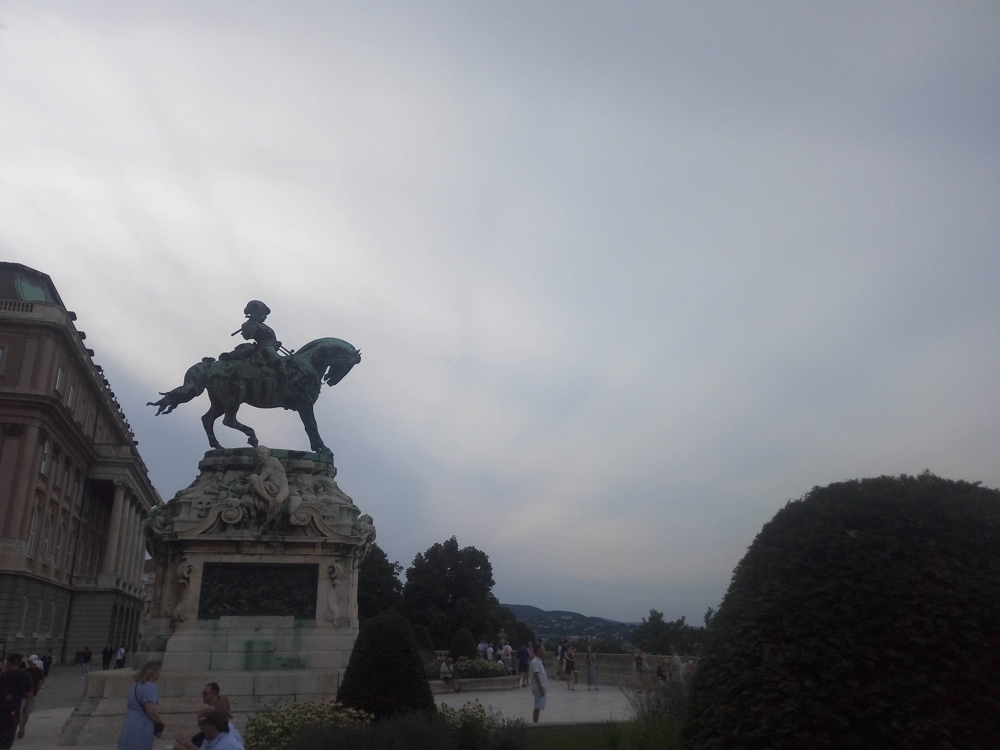

Buda Castle
Budapest · Hungary
Rising above the western bank of the Danube, Buda Castle occupies one of the most historic and visually striking parts of Budapest. The castle district brings together royal heritage, cobbled streets, grand courtyards, and architectural details that reflect different periods of Hungarian history. Its elevated position also provides memorable views across the river towards the monumental buildings and rooftops of Pest. Beyond the palace itself, the surrounding neighbourhood invites visitors to wander through quiet lanes, discover historic façades, and pause at scenic viewpoints. The atmosphere changes throughout the day as sunlight moves across the rooftops and the city unfolds below. Exploring this part of Budapest offered a closer look at the capital's past and its enduring architectural character. The area's historic atmosphere, impressive architecture, and panoramic views make it one of the most memorable places to experience in the Hungarian capital. These photographs reflect my personal impressions of Buda Castle and its remarkable surroundings.
My Photo Gallery
A collection of photographs from my visit to Buda Castle in Budapest, Hungary.
View All Photos ↗